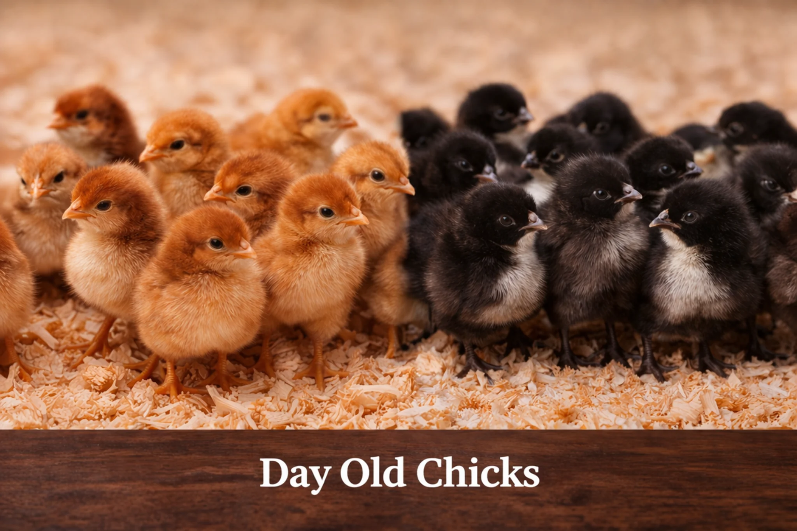
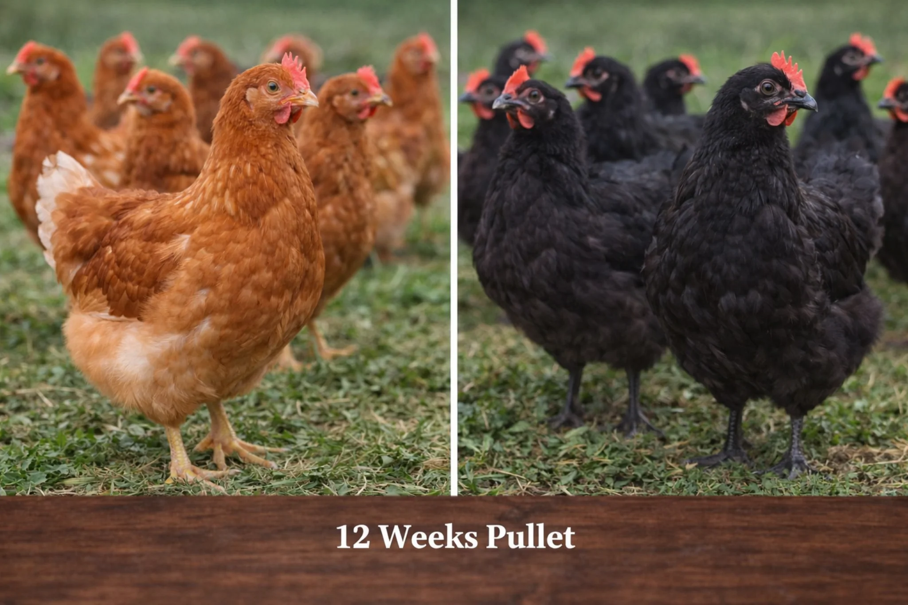
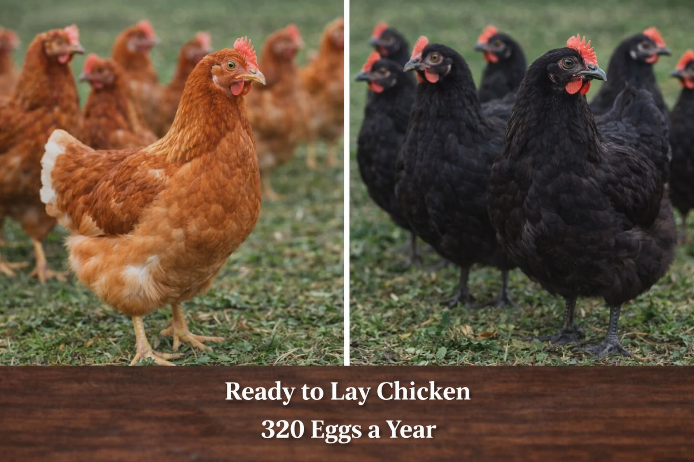

Pullets for Homes and Small Farmers
Siran Valley supports poultry buyers with age-based listings and practical education, not just prices.

Day-old chicks
For buyers with brooding skill and setup.

12-week pullets
A stronger option with less early-stage care.

18-week pullets
Near-ready birds for serious buyers.
What buyers should understand
Buying pullets in Pakistan is not just about price. A buyer should ask about age, current condition, expected readiness, feed transition, transport handling and suitability for cage, deep litter or home setup. Siran Valley aims to guide smaller farmers and homes with honesty.
This page is designed to rank for pullets for sale, layer chicks, Lohmann-style pullets, poultry in KPK and small farmer poultry support.
Speak to the farm: Message Siran Valley Organic Farm directly for eggs, subscriptions, pullets or future meat enquiries.